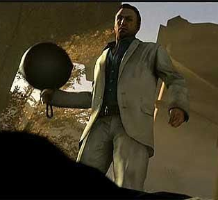
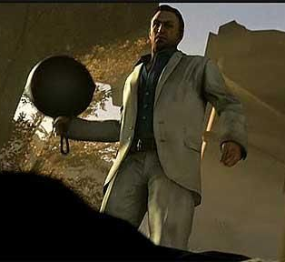
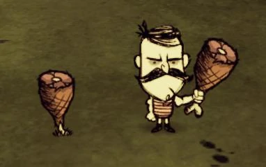
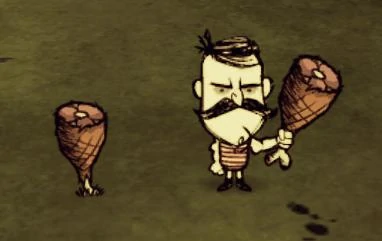

What is Pan Clan ?
Do you have any idea? Any idea who I am?
Basically... kinda of a big deal...
Pav VS Ham is purely a meme thing made for people to have fun:
It's an imaginary war of two tf2 weapons: Pan and Ham.
Even though both are pure reskins - some people find Pan more fun than Ham and vice versa.
This Clan is not associated with any previous Pan movements, this clan's members are polite and civilized people!
Pav VS Ham is purely a meme thing made for people to have fun:
It's an imaginary war of two tf2 weapons: Pan and Ham.
Even though both are pure reskins - some people find Pan more fun than Ham and vice versa.
This Clan is not associated with any previous Pan movements, this clan's members are polite and civilized people!
Lore
And St. Demomard raised the Pan up on high, saying:
O Lord, bless this thy Pan, that with it thou mayest slash thine enemies to tiny bits, in thy mercy.
And the Lord did grin and the people did feast upon the lambs and sloths and carp and anchovies and hoovies and spycrabs and sun-on-a-stick.
Amen.
O Lord, bless this thy Pan, that with it thou mayest slash thine enemies to tiny bits, in thy mercy.
And the Lord did grin and the people did feast upon the lambs and sloths and carp and anchovies and hoovies and spycrabs and sun-on-a-stick.
Amen.
Items in question
Pan
 
Nick from l4d2 wielding a Pan

Nick from l4d2 wielding a Pan
Actually, both items are promotional items for two iconic games:
Pan is an all-class reskin for stock melee weapons.
Notable differences are:
- Pan: Left 4 Dead 2
- Ham: Don't Starve Together
Pan is an all-class reskin for stock melee weapons.
Notable differences are:
- Funny sound
- Funny appearance
- 99.9% crit rate
- Pan
Ham
 
Wolfgang from DST wielding the Ham Bat

Wolfgang from DST wielding the Ham Bat
Ham is also an all-class reskin for stock melee weapons.
Notable differences are:
Notable differences are:
- Jiggling
- Tasty appearance
- Hamburger